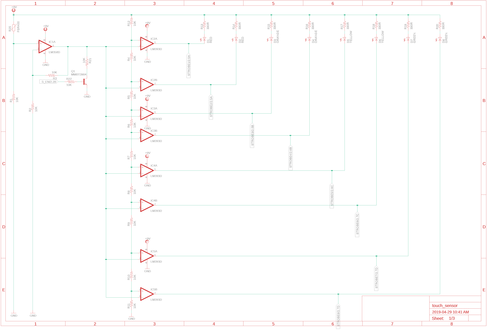
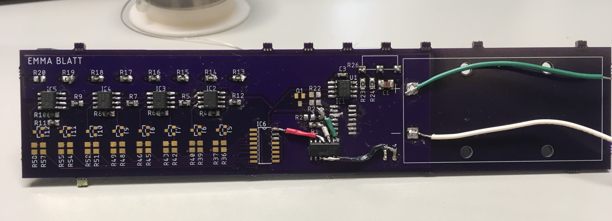
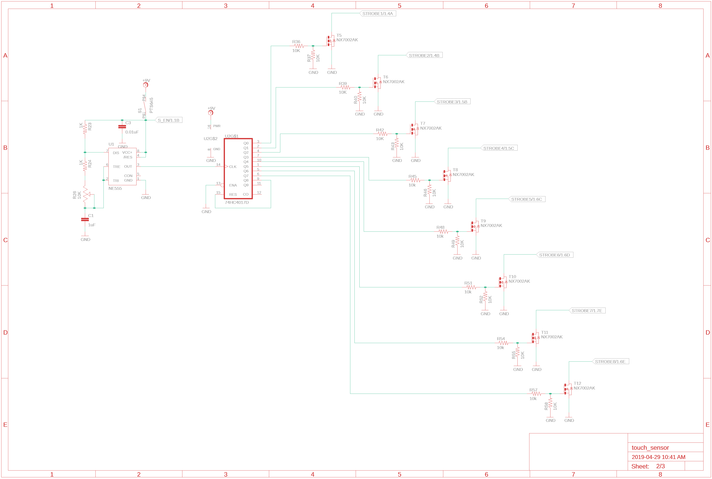

I designed and brought up a pressure-sensor LED array to explore using MOSFETs as switches, turning on/off LEDs with comparators, and using a 555 timer with a decade counter. A similar base design can be used to create a battery level monitor.
Tools: Eagle, LTSpice, Soldering iron, Oscilloscope
Keywords: Force-sensitive resistor, LED array, 555 timer, decade counter, MOSFET switches
There are various types of pressure sensors that could have worked in this application. I chose to use a force-sensitive resistor (FSR) because it is easy to implement and relatively inexpensive.
See the full FSR integration guide →The sensor is a force-senstive resistor. When more force is applied, the filament has a lower resistance.
As indicated in the datasheet, the resistance ranges from 100K to around 1K. Through testing as a voltage divider with a 10k resistor and a 9V battery, I found that the output voltage ranges from 0 to 7.5V.
I chose to use an array of 8 LEDs that each turn on at a fixed voltage level (created using a voltage divider). When more pressure is applied to the sensor, more LEDs will turn on.
For fun, I added a strobe LEDs button. This will pull the comparator signals high to disable the sensor, and enable the 555 timer. The 555 timer is the CLK for the decade counter, which will turn on the LEDs one at a time. There is a potentiometer to control the CLK speed.
The main purpose of the circuit is to turn on LEDs proportional to the force applied to the sensor. I did this using comparators that take the input from the FSR voltage divider and compares it to a fixed reference voltage (set by a divider). If the input voltage is higher than the reference voltage, then the output will be LOW and the LED will turn on.
I calculated the series resistor values so that 20mA of current will flow through each LED. The voltage drop across the LED depends on the color of the LED, but in general it ranges from 2V to 3V.
I chose to use Lumex Opto Inc. clear surface mount LEDs (1206) because they are manufactured in the desired colors: 2x red, 2x orange, 2x yellow, 2x green.
When the strobe button is pressed, the input line to the comparators is pulled to GND and the 555 timer is enabled.
The 555 timer is configured in astable mode, so it operates as an oscillator. The trigger and threshold pins are tied together since there is no external trigger pulse. The output frequency will be proportional to the RC time constant created by the series resistors and the capacitor. There is a potentiometer connected between discharge and trigger/threshold to control the rate of the output (strobe rate).
The strobe frequency ranges from around 90Hz to 1kHz.
The 555 timer controls the strobe rate of the decade counter. Each output of the decade counter is connected to a MOSFET that will turn on the LEDs, and the last output will reset the decade counter to turn on the first LED again.
The red copper pour is the +9V supply, and the blue copper pour is the ground plane. The project is powered with a +9V battery.
Nothing is ever perfect on the first try. For the first iteration of this board, I reversed the inputs to the comparators (so the LEDs turned off when they were supposed to turn on), and used the wrong footprint for the decade counter.
The next iteration is currently in the works, and I'll have a working video of the project up soon :)